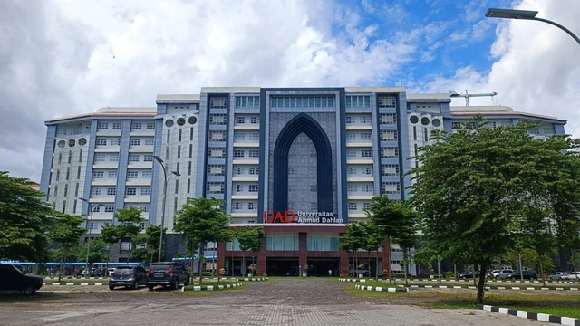
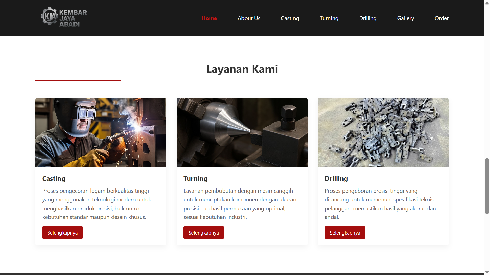

I am an Informatics graduate from Ahmad Dahlan University in Yogyakarta with skills in database management, and information systems. I am familiar with using Microsoft Excel, SQL, and MySQL for data entry, processing, validation, and management.
Outside of class, I serve as a laboratory assistant for Algorithm Programming and am active in the Taekwondo Student Activities Unit. I am meticulous, adaptable to new systems, and comfortable working in a team. Currently, I am interested in data management, information management, and IT support.

Main Campus (Campus IV)Yogyakarta, ID
Universitas Ahmad Dahlan
80+Students mentored as a laboratory assistant
2Web-based systems built and deployed
3,48GPA from a scale of 4,00
11Technologies and tools mastered
Portfolio

Project
Development of Management System for Metal Casting Company
CV Kembar Jaya
Developed an integrated company website and admin dashboard with centralized database management, customer order processing, order status tracking, and dynamic content management.
Development and Planning of the Information System for Langse Farma Pharmacy, Boyolali
Apotek Langse Farma, Boyolali
Developed a web-based pharmacy information system featuring stock management, sales transactions, and transaction history to improve operational efficiency and data accuracy.
Assisted Algorithm Programming courses by teaching fundamental programming concepts, guiding students through debugging, and managing academic records for over 80 students.
Division Head - Belt Promotion Test and Championship
UKM Taekwondo UAD
Managed administrative operations for Taekwondo belt promotion tests and championships, including event documentation, athlete data management, funding coordination, and report preparation.
Presiding Officer – Taekwondo Student Organization Congress Committee
UKM Taekwondo UAD
Led organizational congress plenary sessions, coordinated discussions, facilitated participant input, and ensured structured decision-making to achieve collective agreements.